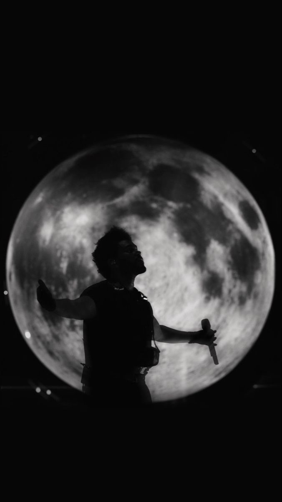

Abel Makkonen Tesfaye (Vulgo The Weeknd)

Contato:
E-mail:
abelzinho@gmail.com
Telefone:
+55 (11) 0302-0222
LinkedIn:
linkedin.com/calleribrocador
Github:
github.com/audir8
Olá, busco
oportunidades de estágio na área de Cantorias rsrs
porque eu acho isso muito poggers tlgd
Projetos
Conhecimentos técnicos na Música
Tecnologias:
Linguagens: Inglês e Búlgaro
Frameworks front-end: Lost in the fire rsrs
Ferramenta de controle de versão: nem sei
Editores de texto: CS GO
Idiomas:
Inglês de cria mané
The Weeknd (Fluente)
Formação:
Ensino Fundamental:
Instituto dos Irmãos Maristas
Ensino Médio:
Instituto Federal do Tocantins - Campus Paraíso do Tocantins
Graduação:
Universidade UniEvangélica - Campus Anápolis-GO